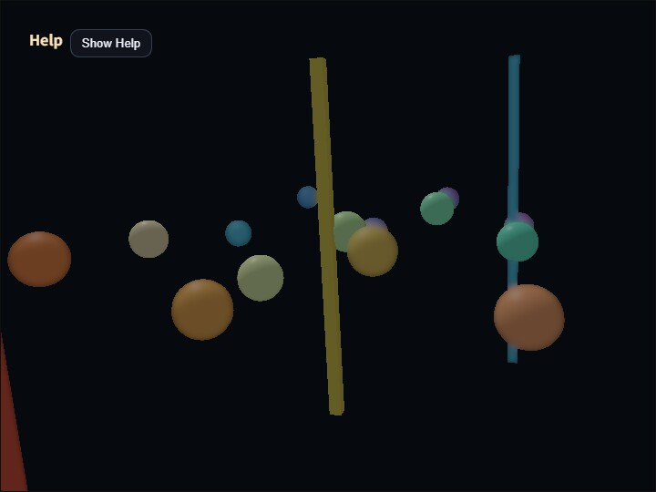

compute_dof
English | 日本語

Overview
Depth of field keeps surfaces near the focus distance sharp and blurs geometry in front of and behind that plane. This sample demonstrates the image pyramids, geometric coverage, CoC metadata, and near/far composition order of ComputeDofPass integrated into ComputeEffectPipeline.
Using one value for both pixel coverage and distance from focus leaves sharp scene color at the center of out-of-focus geometry. ComputeDofPass stores geometric coverage separately from CoC, using coverage for silhouette composition and CoC only for selecting blur levels.
Running the sample
- Open ./compute_dof.html in a WebGPU-capable browser
- Use the Help Panel together with CommandPalette
- Open CommandPalette by double-tapping the canvas or pressing
/ - Press
Vto cycle through the composite, coverage, CoC, and pyramid views
Image pyramid and CoC
Scene color remains linear HDR in rgba16float. The pass successively creates low-frequency images at 1/2, 1/4, 1/8, and 1/16 resolution. Every level applies a 13-tap low-pass filter to the preceding level, producing a smoother and wider blur as resolution decreases.
CoC converts view-space distance from focus into a level position:
stage = clamp(
abs(viewDepth - focusDistance) / focusRange * cocScale,
0,
4
)A stage above 0 and up to 1 selects 1/2. Stages from 1 to 2 interpolate 1/2 and 1/4, 2 to 3 interpolate 1/4 and 1/8, and 3 to 4 interpolate 1/8 and 1/16. Increasing CoC Scale reaches wider levels over a shorter depth difference. It is not a ratio for retaining sharp scene color.
Blur Radius changes the sampling distance of each low-pass filter from 0.25 through 3.0. Blur Radius controls the spatial spread of the levels, while CoC Scale controls which level is selected.
Separating geometric coverage and CoC
The CoC extraction pass writes three full-resolution rgba16float targets: near color plus coverage, far color plus coverage, and near/far CoC metadata. A geometry pixel writes vec4f(scene.rgb, 1.0) to either the near or far target. Alpha is pure geometric coverage and is never multiplied by CoC. The clear background, focus band, and opposite layer have coverage 0.
CoC metadata stores the near stage in R and the far stage in G. Color, coverage, and CoC metadata each receive levels from 1/2 through 1/16. Filtered metadata is the average of stage * coverage, so the source stage is recovered as moment / coverage outside a silhouette. The selected blur level therefore remains independent of decreasing edge coverage.
Inside and outside the original silhouette
Inside the original silhouette of out-of-focus geometry, the complete-scene low-frequency image selected by CoC fully replaces sharp scene color. A scene level already contains object and surrounding colors in their filtered proportions. Missing coverage on the inner side is therefore filled by surrounding color instead of reconstructing a sharp object image.
The near and far layers spread object color outside the original silhouette. Composition recovers their premultiplied color with blurred.rgb / blurred.a and uses only blurred.a to mix it with the background or the layer behind it.
For a constant-color object, the inner scene low-frequency image is:
objectColor * coverage + surroundingColor * (1 - coverage)The outer coverage composition evaluates to the same expression, so the result does not jump at the original geometry boundary. Dividing a near or far layer by coverage inside the silhouette would reconstruct the object color and leave a sharp core, so the implementation does not do that.
Near and far composition order
Far blur remains behind the focus plane and near geometry. Near blur is composited over far geometry, the focus plane, and the clear background. Out-of-focus foreground geometry can therefore spread beyond its original silhouette.
The clear background has neither view-space distance nor CoC. The pass does not replace the entire background with the 1/16 image. It composites only where filtered near or far coverage arrives.
Diagnostic views
far coverage and near coverage display each geometry layer's alpha in grayscale. Target geometry should be white while the focus band, clear background, and opposite layer remain black.
CoC metadata displays near geometry in red and far geometry in blue, with stage 4 at full intensity. Changing CoC Scale changes CoC intensity without changing either coverage view.
depth displays Reverse-Z depth, focus displays the focus band and four near/far stages, half / quarter / eighth / sixteenth display the scene low-frequency levels, and composite shows the final result.
GPU cost
DoF uses four full-resolution targets and four four-level image pyramids. Levels from 1/2 through 1/16 contain 85 / 256 as many pixels as full resolution. At 8 bytes/pixel for rgba16float, the DoF targets use 42.625 bytes per full-resolution pixel:
4 * 8 bytes
+ 4 * 8 bytes * 85 / 256
= 42.625 bytes / full-resolution pixelThis is approximately 149.9 MiB at 2560×1440 and 337.1 MiB at 3840×2160, excluding implementation-specific row alignment and resource bookkeeping.
The pass uses 18 compute dispatches: four levels each for scene, near, far, and CoC, followed by CoC extraction and final composition. Lower levels process progressively fewer pixels, so dispatch count alone does not determine GPU time.
Limitations
Geometry immediately outside the focus band starts at the 1/2 level instead of crossfading from sharp scene color. This removes the sharp core but can make blur width change visibly at the focus boundary.
The complete-scene low-frequency image contains colors from different depths, so strong blur can mix colors across depth relationships. This design does not reproduce exact circular bokeh or fully depth-aware occlusion. It prioritizes removing the sharp core and spreading near and far silhouettes continuously for real-time rendering.